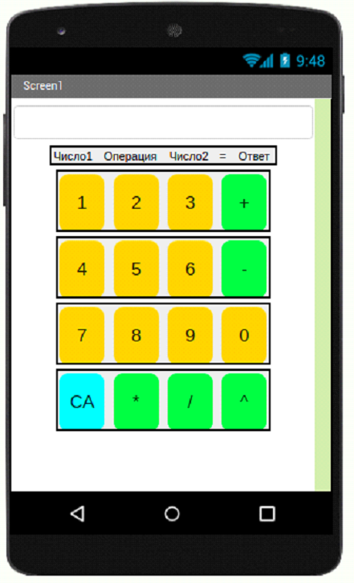

<link rel="stylesheet" href="projectStyle.css">

<section class="project-container">
	<div class="project-container__logo">
		
	</div>
	
	<p class="project-name">Проект 7: Калькулятор</p>
	<div class="description-block">
		<article class="description-block__text">
			<div class="logos">
				<!--  -->
			</div>
			
			<p>
				Калькулятор – это приложение или сервис, который позволяет выполнять различные математические расчеты, такие
				как:
			</p>
			<ul>
				<li>Классические (сумма, вычитание, умножение, деление)</li>
				<li>Нахождение корня</li>
				<li>Процент</li>
			</ul>
			<p>И т.д.</p>
			<p>Калькулятор помогает не только в учебе, но и в жизни.</p>
			<p>Задание.</p>
			<p>
				Создать программу классического калькулятора, для выполнения математических расчетов. Вводимые
				числа и выбранная операция должны отправляться в надписи под текстовым полем ввода.
			</p>
			<p>Требования:</p>
			<ul>
				<li>Создать отдельную кнопку для каждой цифры (1, 2, 3, ..)</li>
				<li>Создать отдельную кнопку для каждой операции (+, -, *, ..)</li>
				<li>Расчет должен производиться следующим образом:</li>
			</ul>
			<p>Ввод первого числа -> вид операции -> ввод второго числа</p>
			<p>Например, 3+2</p>
			<p>По клику на знак равно (“=”) получать ответ(итог)</p>
			<p>Компоненты</p>
			<p>Текст, Надпись, Вертикальное расположение, Кнопки</p>
			<p>
				Пользователь вводит первое число, затем выбирает желаемую операцию, вводит второе число, по нажатию на знак
				равно получает итог.
			</p>
			<p>При выполнении используй фантазию!</p>

			<div class="description-block__image">
				
			</div>
		</article>
	</div>
</section>